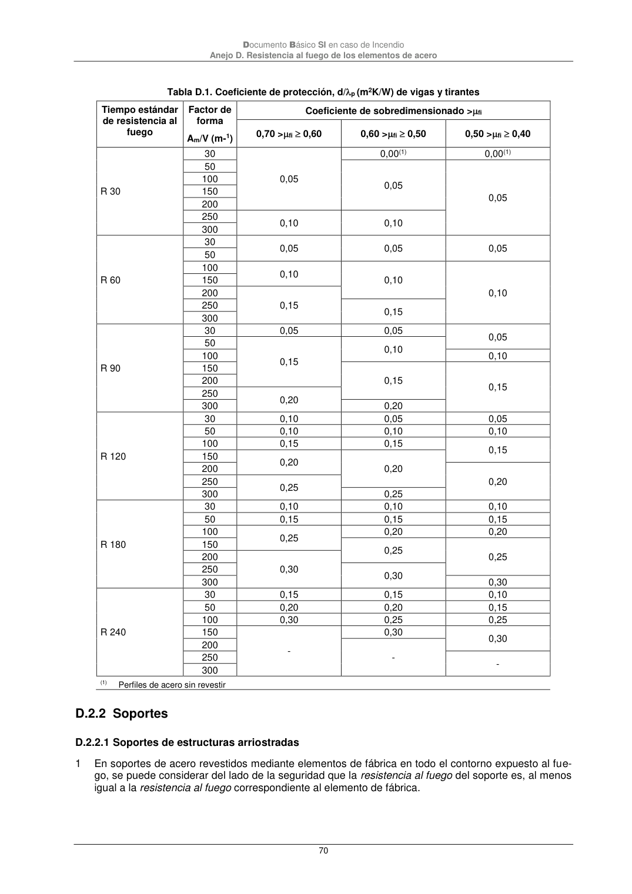
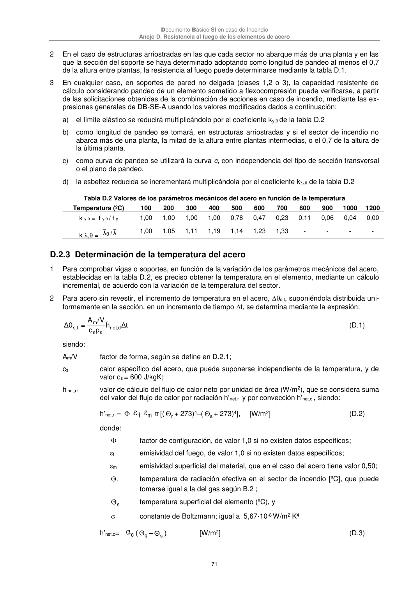

DB-SI · D.2.2 Soportes · versión 2025-03-04 · capa oficial
Formatos: JSON compacto · Markdown · PDF fuente
Ámbito del documento · texto del ámbito · documento y tablas
ID técnico a0186 · PDF pág. 70-71 · jerarquía no validada por persona · contrastado con el literal de la página 70 (marcador PDF); no validado por persona · padre: a0183
D.2.2 Soportes D.2.2.1 Soportes de estructuras arriostradas 1 En soportes de acero revestidos mediante elementos de fábrica en todo el contorno expuesto al fue- go, se puede considerar del lado de la seguridad que la resistencia al fuego del soporte es, al menos igual a la resistencia al fuego correspondiente al elemento de fábrica. Documento Básico SI en caso de Incendio Anejo D. Resistencia al fuego de los elementos de acero 71 2 En el caso de estructuras arriostradas en las que cada sector no abarque más de una planta y en las que la sección del soporte se haya determinado adoptando como longitud de pandeo al menos el 0,7 de la altura entre plantas, la resistencia al fuego puede determinarse mediante la tabla D.1. 3 En cualquier caso, en soportes de pared no delgada (clases 1,2 o 3), la capacidad resistente de cálculo considerando pandeo de un elemento sometido a flexocompresión puede verificarse, a partir de las solicitaciones obtenidas de la combinación de acciones en caso de incendio, mediante las ex- presiones generales de DB-SE-A usando los valores modificados dados a continuación: a) el límite elástico se reducirá multiplicándolo por el coeficiente ky,de la tabla D.2 b) como longitud de pandeo se tomará, en estructuras arriostradas y si el sector de incendio no abarca más de una planta, la mitad de la altura entre plantas intermedias, o el 0,7 de la altura de la última planta. c) como curva de pandeo se utilizará la curva c, con independencia del tipo de sección transversal o el plano de pandeo. d) la esbeltez reducida se incrementará multiplicándola por el coeficiente k, de la tabla D.2 Tabla D.2 Valores de los parámetros mecánicos del acero en función de la temperatura Temperatura (ºC) 100 200 300 400 500 600 700 800 900 1000 1200 k y, = f y,/ f y 1,00 1,00 1,00 1,00 0,78 0,47 0,23 0,11 0,06 0,04 0,00 k , = _ θ _ λ / λ 1,00 1,05 1,11 1,19 1,14 1,23 1,33 - - - -


PDF fuente redistribuible: copia fiel enlazada en esta página (SHA256 verificado).